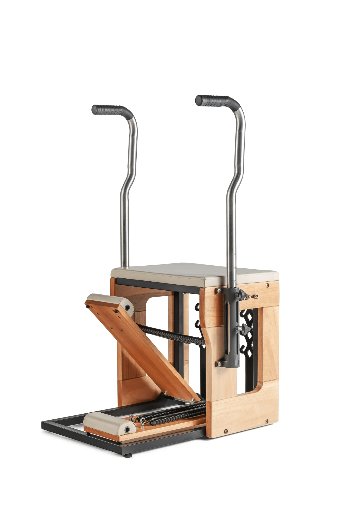

Perfil:@maite_laures
Perfil:@maite_laures
Este equipamento é básico para trabalhar com pilates. Por se assemelhar a uma cadeira, recebeu o nome de Step Chair. Pode ser encontrado com bengalas ou sem, embora a versão com bengalas tenha maior popularidade entre os praticantes e entusiastas do método! A Step Chair da Kauffer Pilates é fabricada em madeira nobre e conta com acabamento em verniz acetinado, o que dá maior durabilidade e resistência aos arranhões. Além disso, por ter sua base estrutural feita em aço, a peça tem maior resistência e estabilidade, não ficando “bambo” com o passar do tempo e uso. As medidas da Step Chair são: 80 cm de largura,1,34 m de altura com a bengala,80,6 cm de comprimento e 63 cm de altura do assento.
fonte:kaufferpilates
Voltar